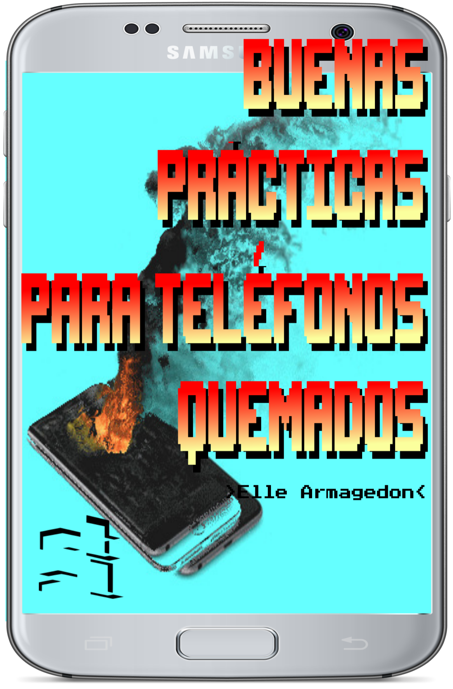
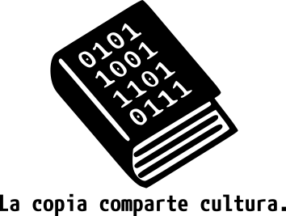

Buenas prácticas para teléfonos quemados
27-03-2017

Armagedon, Elle
Buenas prácticas para teléfonos quemados / 1a ed. - Ciudad Interdimensional de Buenos Aires: etal, 2021.
Traducción: alf
Título original: Burner Phone Best Practices.

🄯2020 - etal el texto de esta publicación y esta edición se liberan bajo la Licencia de Producción de Pares